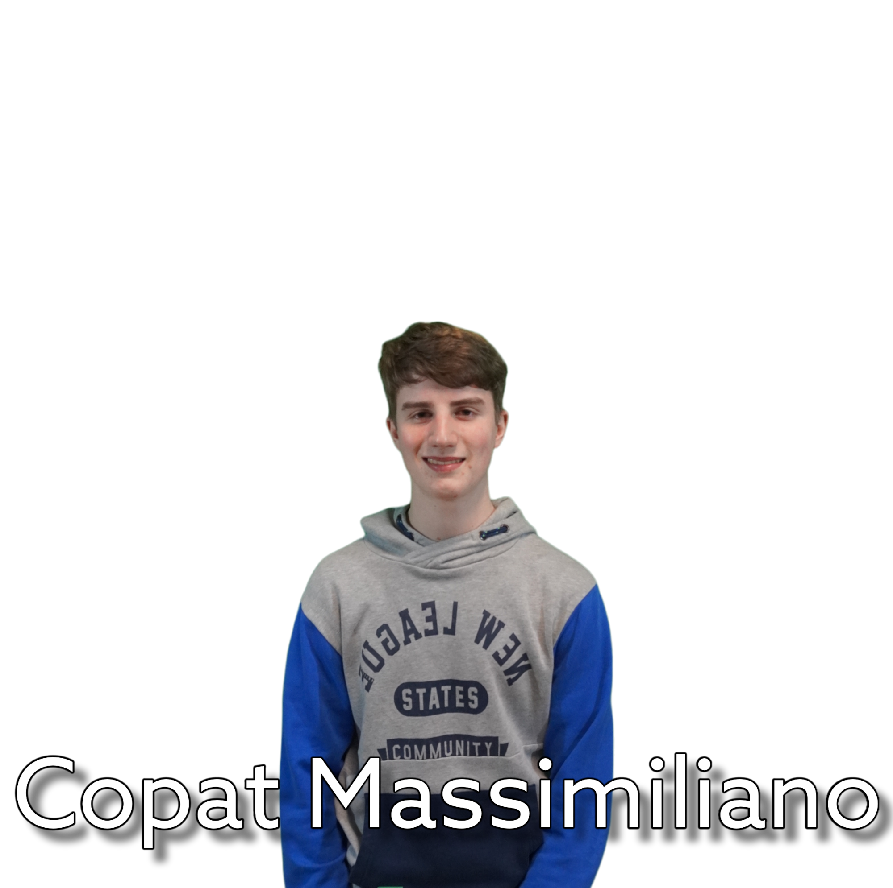
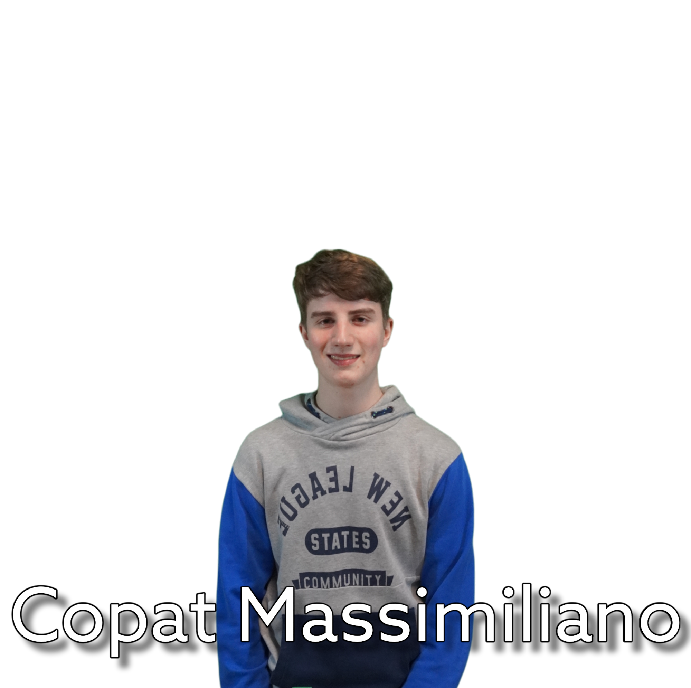

Il nostro Team


{kind=link}
{kind=link}
{kind=link}
 

{kind=link}

{kind=link}
La nostra storia
Arrivo a Genova
30 maggio
Siamo finalmente a Genova!!
Domani ci aspetta la finale, augurateci buona fortuna!
Ultimi Ritocchi
26 maggio
Ultimo incontro del gruppo. Siamo pronti per la finale!
Seconda visita all'immaginario
18 maggio
In questa giornata abbiamo provato il Prototipo con il nostro partner
La gara continua
13 maggio
Oggi ci siamo ritrovati per finalizzare il prototipo del nostro progetto
Risultati
2 maggio
Abbiamo superato le semifinali, siamo finalmente in finale!
Genova arriviamo!!
Semifinali
28 aprile
Oggi abbiamo partecipato alle semifinali del progetto, ora non ci rimane altro che aspettare il risultato
Sviluppo del progetto
25 aprile
Siamo agli sgoccioli, ma il progetto è al completo! I membri del gruppo si stanno impegnando per fare gli ultimi ritocchi.
Primo post
24 aprile
Abbiamo ufficialmente aperto il primo profilo social del progetto ScienceIsNAO pubblicando la nostra foto di presentazione! Seguiteci in tanti ig:scienceisnao
Giorno riprese
11 aprile
Durante l'incontro di oggi abbiamo fatto le riprese per il video di presentazione, ora basterà aspettare che il nostro videomaker Alessando completi l'opera.
Visita all'Immaginario
24 marzo
Oggi abbiamo visitato l'Immaginario Scientifico di Pordenone. Siamo riusciti a trovare diverse possibili applicazioni delle abilità del robot all'interno della struttura.
Incontro con il Partner
7 marzo
Dopo una breve spiegazione delle potenzialità del robot e dei suoi possibili utilizzi, i rappresentanti dell'immaginario scientifico ne sono rimasti entusiasti.
Abbiamo ufficialmente trovato il nostro partner!
Primo incontro
21 febbraio
Inizia la nostra avventura con il NAO, durante il primo incontro abbiamo fatto un brainstorming generale e abbiamo deciso di dividerci i vari compiti.
Il nostro partner
Un museo della scienza interattivo e sperimentale, all’interno di un suggestivo e luminoso edificio di archeologia industriale: le Officine delle Tintorie dell’ex Cotonificio di Torre. Il museo è aperto la domenica per il pubblico (con prenotazione consigliata), da lunedì a venerdì per le scuole (prenotazione obbligatoria). Colorati e coinvolgenti percorsi interattivi permettono ai visitatori di tutte le età di entrare in contatto con la scienza in modo diretto, da protagonisti: un’esperienza che rende tangibili i fenomeni naturali e comprensibili le leggi fisiche che li governano.